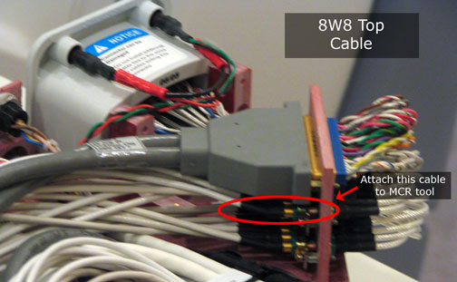

Illustration 14: 8W8 Top Test

Illustration 14: 8W8 Top Test
To perform this test, take the top 8-channel connector off the Service Hub and connect it to the MCR tool. See Illustration 15. Once this test is complete, note the results and install the cables to their original position.
Illustration 15: MCR Tool Connect Location for 8W8 Top
